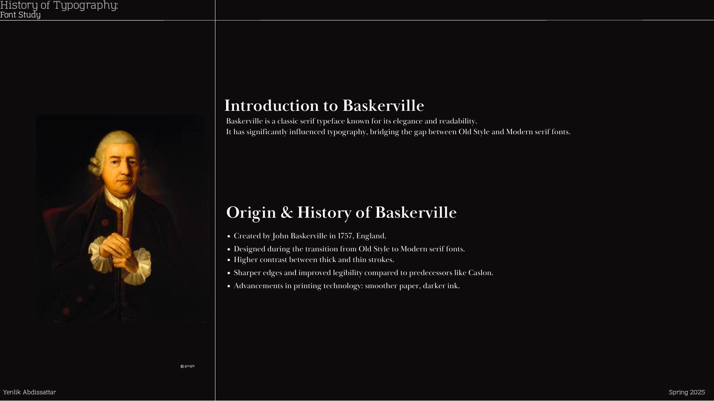
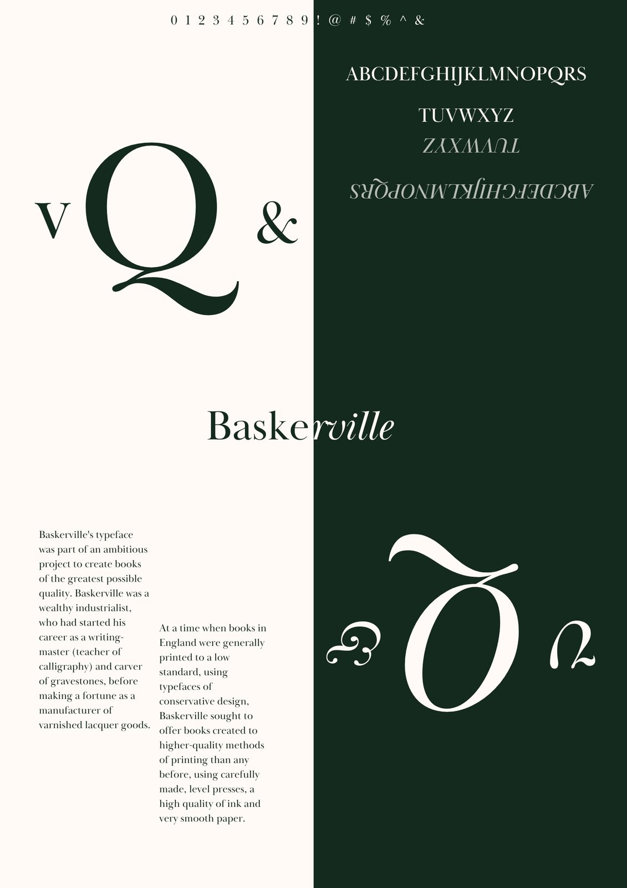
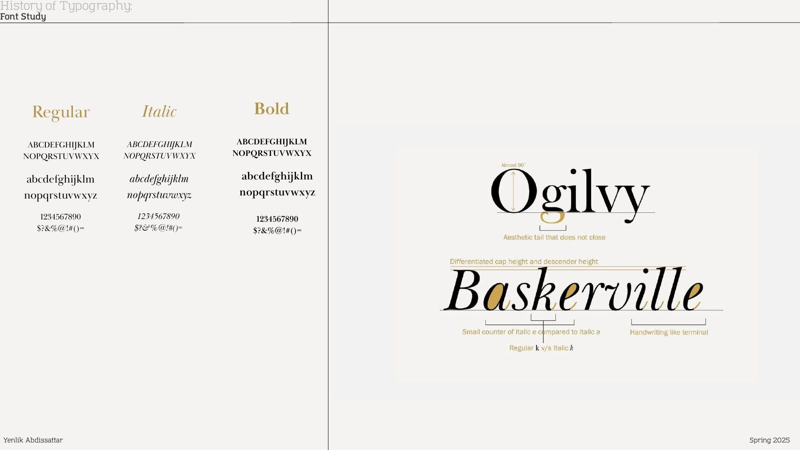
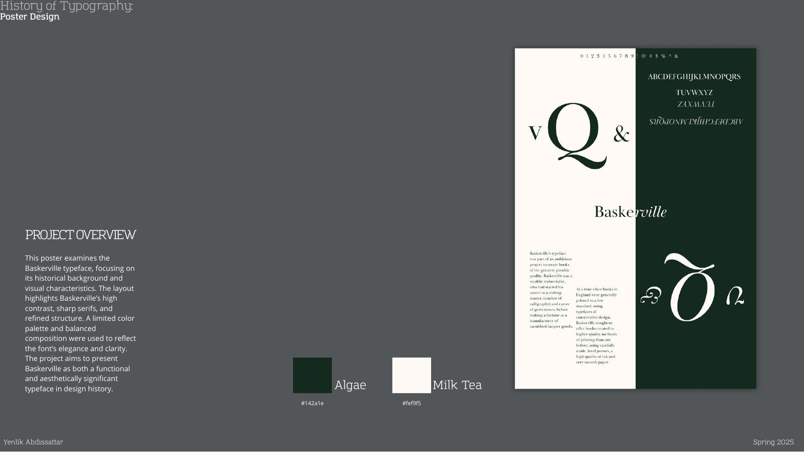
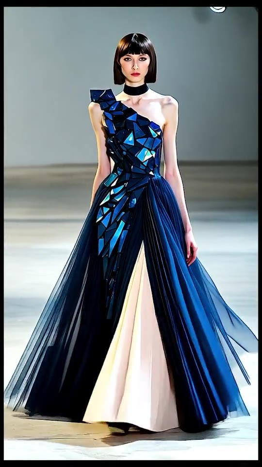

01
History
Baskerville sits between Old Style and Modern serifs: higher contrast, sharper edges, made possible by smoother paper and darker ink.

Typography study

Overview
Baskerville's structure and contrast studied, then set as a poster and a companion book cover.
Brief
Present Baskerville as both a functional and an aesthetically significant typeface in design history.
Approach
A study of its origins (John Baskerville, England, 1757) and its letterforms, then a poster and book cover that use its high contrast, sharp serifs and a two-colour palette.
Baskerville sits between Old Style and Modern serifs: higher contrast, sharper edges, made possible by smoother paper and darker ink.

Regular, italic and bold, compared letter by letter.

High contrast, sharp serifs and refined structure, in a limited palette and balanced composition.

A companion to the poster, with the same tonal elegance and type hierarchy.



Next, 09
RunwAI